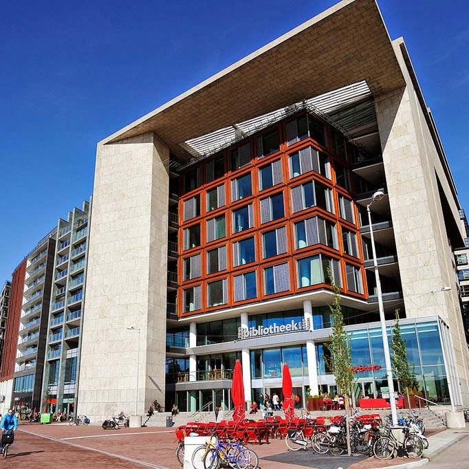
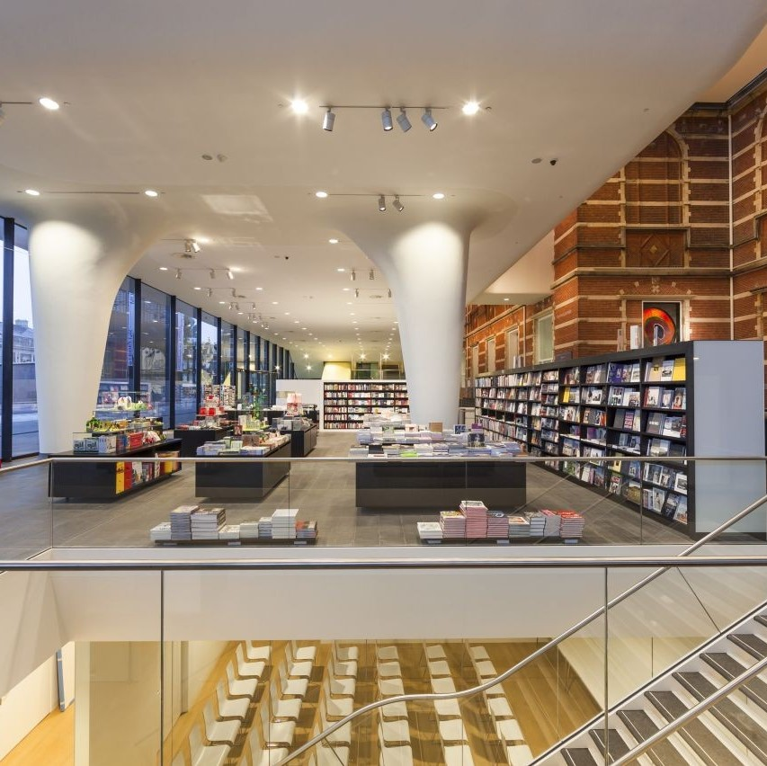
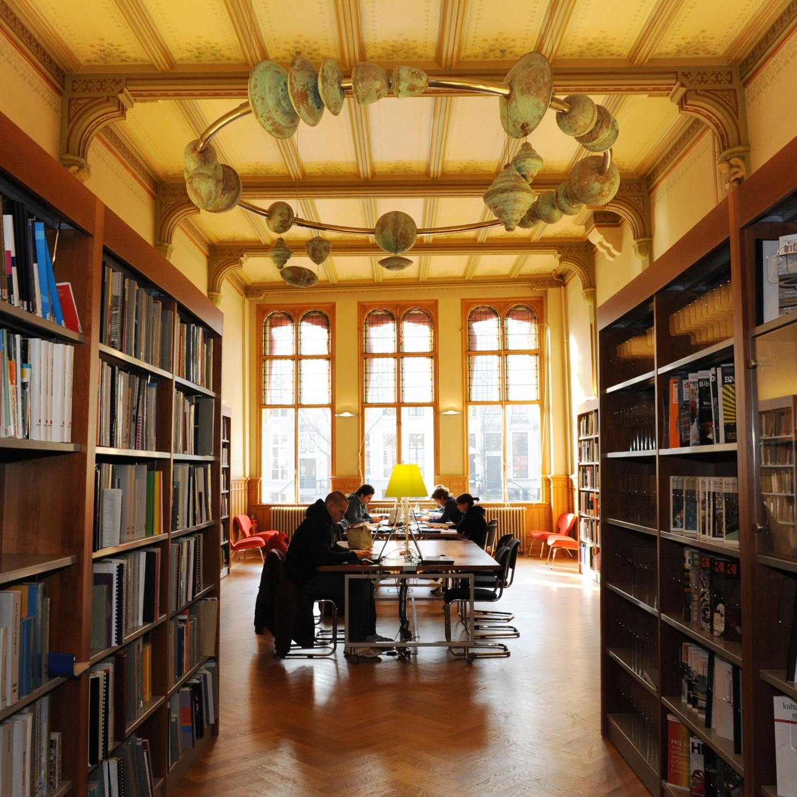
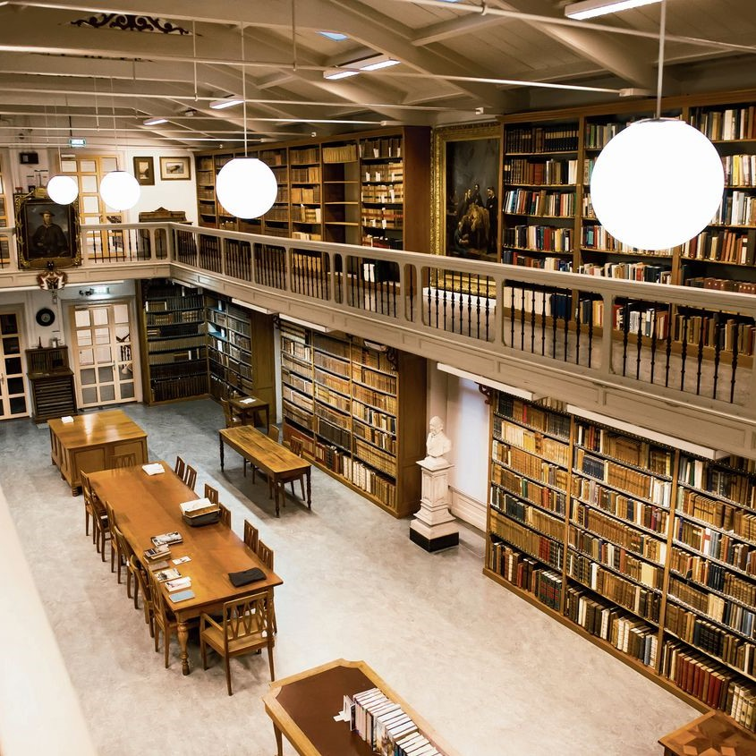

OBA AMSTERDAM  OBA Oosterdok on the Oosterdokseiland is with an area of 28,000 square meters the largest library in the Netherlands. Open ~20M
STEDELIJKE MUSEUM  contemporary art, design, photography, new media, installations and art theory. Open ~25M
BOEKMANS STICHTING  The Boekman Foundation, an independent knowledge center focused on art and culture, is a stone's throw from the University Library. Open ~40M
UVA AMSTERDAM  The library offers a wide range of study places on every campus; there are more than 4500 places to choose from. Open ~65M